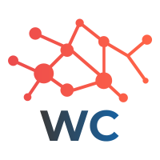

Kudai es una banda chilena de pop rock, formada en el año 2003 por los cantantes Bárbara Sepúlveda, Tomás Manzi, Nicole Natalino y Pablo Holman.
En 1999 sus miembros integraron una agrupación infantil llamada CIAO: el poder de los niños, a cargo del mánager Pablo Vega y el productor musical Andrés Sylleros. En 2003 lanzan su propio proyecto llamado Kudai, esta vez bajo el alero del productor musical Gustavo Pinochet, con un estilo orientado hacia el público adolescente y que se consolida con la publicación del álbum Vuelo un año más tarde. Dicho disco contenía el sencillo Sin despertar que supuso el primer gran éxito del grupo.
El 9 de agosto de 2009 se anunció, mediante un comunicado oficial, que el grupo se tomaría un descanso para poder realizar otros proyectos no relacionados con la música, y en 2010 se anunció oficialmente su separación.1
Tras siete años, el 30 de noviembre de 2016 la banda confirmó su regreso a los escenarios con los miembros originales, siendo su primera presentación el día 3 de diciembre, como parte del show de la Teletón 2016 (Chile).

Después de haber cumplido 10 años de la salida de Nicole Natalino de la banda se han llevado a cabo diferentes encuentros entre los cuatro integrantes originales de la banda. No han formado parte de estas conversaciones ni el exmanager de la banda Pablo Vega ni la ecuatoriana Gabriela Villalba.
Con la reincorporación de Natalino al grupo y la no inclusión de Villalba, el cuarteto vuelve a la formación original luego de una década. Actualmente se llevan a cabo conversaciones acerca de la reanudación del proyecto entre el compositor Gustavo Pinochet y los integrantes Barbara Sepúlveda, Tomás Manzi, Nicole Natalino y Pablo Holman que actualmente reside en México.7
El 4 de mayo de 2018 se estrenó el primer sencillo de este cuarto disco, titulado "Piensa", el cual llegó a los primeros lugares en los ránkings de las radios chilenas. El 17 de agosto se estrenó su segundo sencillo llamado "Lluvia de Fuego" e iniciando paralelamente una nueva gira bajo el nombre de "Lluvia de Fuego Tour". El 23 de noviembre lanzaron su tercer sencillo "Dime Cómo Fue".